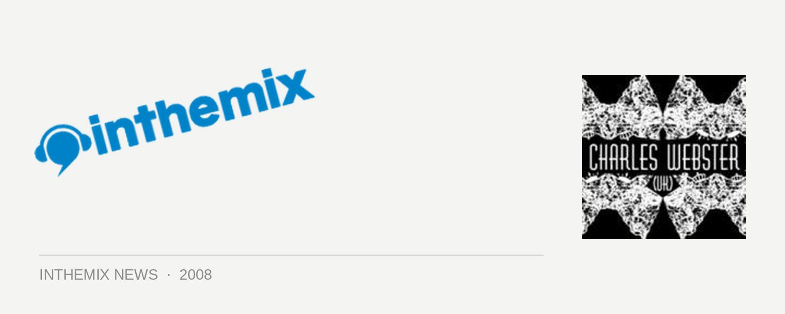

Charles Webster down for next Future Classic label Night
Continuing their reputation for bringing you quality underground sounds, the crew from Future Classic will be featuring none other than Charles Webster at the July edition of their Label Night. The DJ’s DJ and the producer’s producer, he’s now well into his second decade of being part of the electronic music scene and know for the soul that oozes out of anything he produces, he’s sold over 100,000 albums without the aid of a hit single or ever compromising his underground status.
With a new triple compilation out on the Defected label and a new solo album in the works, the Future Classic crew thought it has high time that he came to party in Sydney. Conveniently, he’s also just thrown for a remix for Future Classic golden boy Peret Mako who is also locked in to play at the Label Night, as the official launch for his critically acclaimed The Devil’s In The Detail. So it’s all shaping up to be an unbeatable night of soulful underground electronic music.
Future Classic Label Night featuring Charles Webster returns to Civic Underground on Saturday 26th July, tickets are $20 presale and available now.